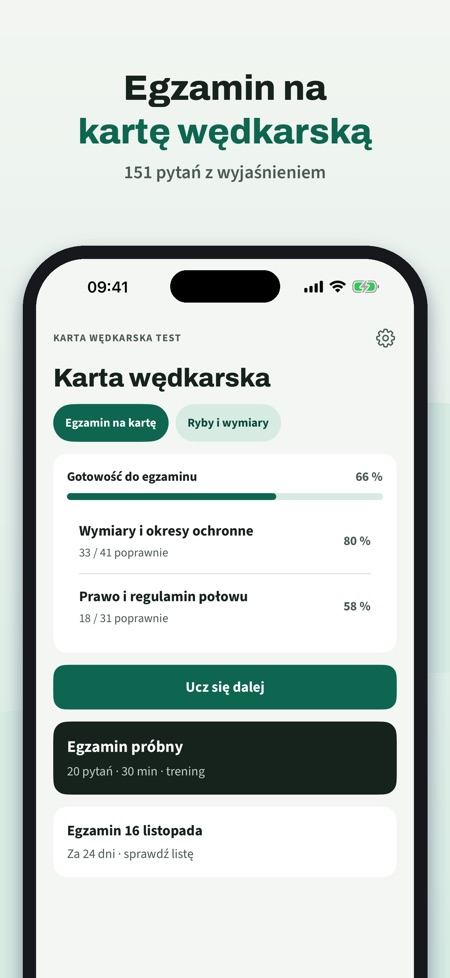
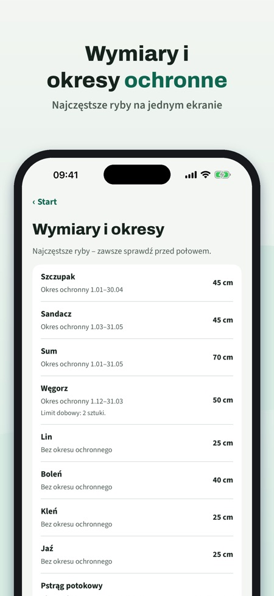
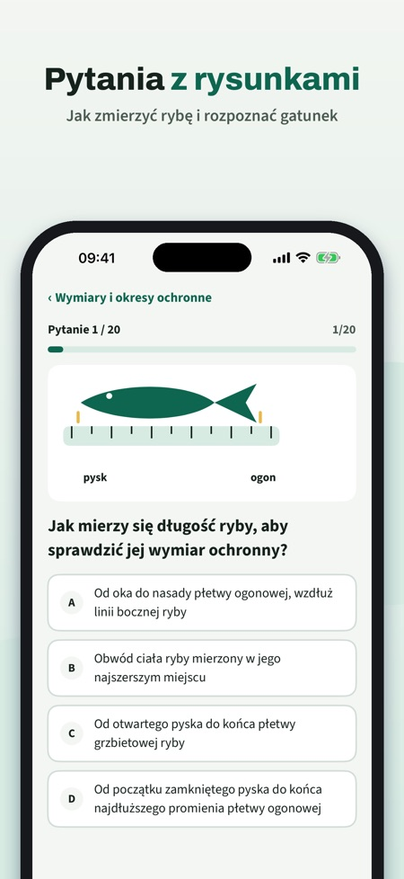

Karta Wędkarska Test pomaga przygotować się do egzaminu na kartę wędkarską. Pytania są po polsku, a każda odpowiedź ma wyjaśnienie.



Pytania według działów z wyjaśnieniem, egzamin próbny, słownik pojęć wędkarskich, tabelę wymiarów i okresów ochronnych oraz listę na dzień egzaminu.
Egzamin próbny na czas ma 20 pytań ze wszystkich działów. Forma i próg prawdziwego egzaminu zależą od organizacji, która go prowadzi.
Tak, działa bez internetu.
Bez zakupu masz 20 pytań, 1 pełny egzamin próbny, słownik, tabelę wymiarów i listę na dzień egzaminu.
Nie. Pełna wersja to jednorazowy zakup, który odblokowuje wszystkie pytania, nielimitowane egzaminy próbne i statystyki.
Nie, jest niezależna i nie jest powiązana z PZW ani starostwem. Egzamin zdajesz przed komisją egzaminacyjną.
Karta Wędkarska Test pomaga przygotować się do egzaminu na kartę wędkarską – z pytaniami po polsku i wyjaśnieniem każdej odpowiedzi.
Bez zakupu masz 20 pytań, 1 pełny egzamin próbny, słownik, tabelę wymiarów i listę na dzień egzaminu. Pełna wersja to jednorazowy zakup, który odblokowuje wszystkie pytania, nielimitowane egzaminy próbne i statystyki. Bez subskrypcji.
Forma i próg egzaminu zależą od organizacji, która go prowadzi; nasz egzamin próbny to trening. Na łowisku mogą obowiązywać surowsze zasady z zezwolenia.
Karta Wędkarska Test jest niezależna i nie jest powiązana z PZW ani starostwem. Egzamin zdajesz przed komisją egzaminacyjną.